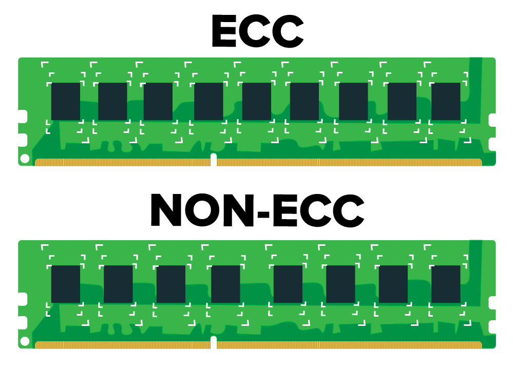

Computergeheugens kunnen af en toe fouten maken. De redenen hiervoor zijn veranderingen in de spanning op de voedingslijnen of elektromagnetische interferentie van buitenaf. Dit is dan ook één van de redenen waarom een goede computerkast en een goede computervoeding belangrijk is. Hierop komen we later, in het hoofdstuk Power Supply Unit, nog terug.
Een fout is een bit die omgedraaid wordt. Een 1 wordt een 0 of omgekeerd.
Dit leidt tot het verkeerd uitlezen en verkeerd opslaan van gegevens. ECC werkgeheugen kan deze fouten detecteren en corrigeren. Het spreekt voor zich dat dit type geheugen iets duurder is en voornamelijk gebruikt wordt in een server of bedrijfskritisch machine. In een particuliere omgeving zal je niet snel ECC werkgeheugen terugvinden.
Bij ECC werkgeheugen wordt er redundantie toegevoegd aan de data. Dit betekent dat er extra bits worden toegevoegd aan een woord. Deze extra bits dienen enkel om de opgeslagen bits te controleren en te corrigeren. Ze bevatten geen nuttige informatie.
Wanneer je kijkt naar onderstaande figuur zie je ook duidelijk dat er bij ECC RAM meer geheugenchips worden gebruikt dan bij het conventioneel type RAM.

Om te begrijpen hoe fouten afgehandeld kunnen worden moeten we eerst goed kijken naar wat een fout eigenlijk is.
Veronderstel dat we in een woord m bits kunnen opslaan. Hier voegen we r bits aan toe zodanig dat we de fout kunnen detecteren en corrigeren. Het totaal aantal bits is dan n.
Veronderstel deze twee woorden met lengte m = 8: 10001001 en 10110001
Er zijn drie bits verschillend. Dit wordt ook wel de Hamming distance d genoemd. De twee codewoorden zijn een hamming distance van 3 van elkaar verwijderd. Er zijn 3 single bit errors nodig om het ene codewoord te converteren naar het andere.
Als eenvoudig voorbeeld nemen we de pariteitscontrole. Op de data passen we een even of oneven pariteitsbit toe zodanig dat we een bitfout kunnen detecteren. Bij even pariteit moet het totaal aantal 1'en van zowel data als pariteitbit even zijn. Bij oneven pariteit moet het totaal aantal 1'en oneven zijn.
Onderstel 10001001 met even pariteit. Dit wordt dan: 10001001 1
De pariteitscontrole heeft een hamming distance van 2. Iedere enkele bitfout wordt gedetecteerd en er moeten minstens 2 fouten optreden vooraleer de detectie omzeild wordt.
Immers: 10001000 1 < detectie | maar: 10000000 1 < geen detectie
Correctie is hier niet mogelijk gezien we op geen enkele manier kunnen weten welke bit er fout is.
Onderstel een zelfgemaakte controle waarin enkel volgende toestanden geldig zijn:
0000000000, 0000011111, 1111100000, 1111111111
De bits in het rood zijn redundant, de rest is de eigenlijke data. De code heeft een hamming distance van 5. Iedere enkele bitfout wordt gedetecteerd en er moeten minstens 5 fouten optreden vooraleer de detectie omzeild wordt.
Stel nu dat 0000 01 1111 verzonden wordt maar 0000 00 0111 aankomt bij de ontvanger.
| Toestand 1 | Toestand 2 | Toestand 3 | Toestand 4 | |
|---|---|---|---|---|
| Code | 0000 00 0111 | 0000 00 0111 | 0000 00 0111 | 0000 00 0111 |
| Toestand | 0000 00 0000 | 0000 01 1111 | 1111 10 0000 | 1111 11 1111 |
| XOR | 0000 00 0111 | 0000 01 1000 | 1111 10 0111 | 1111 11 1000 |
| Hamming distance | 3 | 2 | 8 | 7 |
We detecteren dat er een fout is opgetreden want de code die aankomt is geen geldige toestand. Maar: ongeacht de twee enkele bitfouten kan de code nog gecorrigeerd worden naar 0000 01 1111.
Stel nu dat 0000 01 1111 verzonden wordt maar 0000 00 0011 aankomt bij de ontvanger.
| Toestand 1 | Toestand 2 | Toestand 3 | Toestand 4 | |
|---|---|---|---|---|
| Code | 0000 00 0011 | 0000 00 0011 | 0000 00 0011 | 0000 00 0011 |
| Toestand | 0000 00 0000 | 0000 01 1111 | 1111 10 0000 | 1111 11 1111 |
| XOR | 0000 00 0011 | 0000 01 1100 | 1111 10 0011 | 1111 11 1100 |
| Hamming distance | 2 | 3 | 7 | 8 |
We detecteren dat er een fout is opgetreden want de code die aankomt is geen geldige toestand. Maar: door de drie enkele bitfouten kan de code niet meer correct gecorrigeerd worden naar 0000 01 1111. De code wordt verkeerdelijk gecorrigeerd naar 0000 00 0000.